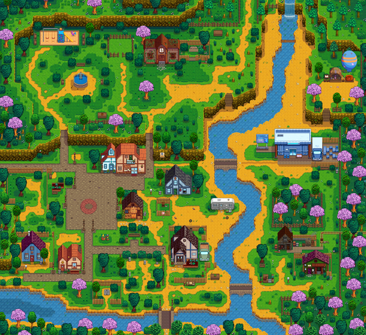

About the Game
Stardew Valley is a farming simulation game where players move to a small town and start a new life. Players can grow crops, take care of animals, explore caves, fish, and build relationships with the people in the town.

Stardew Valley is a farming simulation game where players move to a small town and start a new life. Players can grow crops, take care of animals, explore caves, fish, and build relationships with the people in the town.
